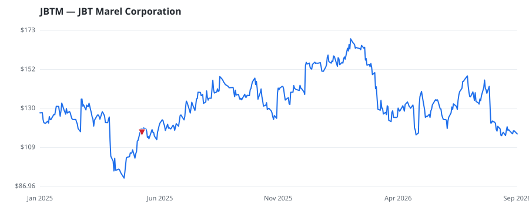

bullish · bearish · n/a — dots: price>SMA10 · SMA10>SMA50 · SMA50>SMA200 · up>down volume (20d)
Capital Goods · mid cap

JBT Marel Corp operates through two reportable segments: Protein Solutions and Prepared Food and Beverage Solutions. The Protein Solutions segment includes businesses that provide solutions for the initial stage processing and harvesting of animal proteins, mainly focusing on poultry, pork, fish, and beef. The Prepared Food and Beverage Solutions segment includes businesses that offer solutions predominantly for downstream value-added preparation, preservation, and packaging of foods and beverages into ready-to-eat or drink products. This segment will also include capabilities for pet food, da SPECIAL INDUSTRY MACHINERY (NO METALWORKING MACHINERY) · website
| Revenue | $3.8B | Net income | $-50.5M |
|---|---|---|---|
| Operating income | $189.4M | Diluted EPS | $-0.98 |
| Assets | $8.2B | Equity | $4.5B |